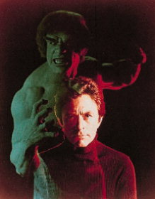

|
|
TV Series of the
The
series "The Incredible Hulk TV Show"
which
featured Bill Bixby and Lou Ferrigno as the Incredible Hulk was one of the
best quality super hero shows ever made.  Lou Ferrigno and Bill Bixby March 10, 1978
- June 2, 1982 Cast: David Banner, physician, scientist, searching for a way to tap into the hidden strength that all humans have. Then an accidental overdose of gamma radiation alters his body chemistry. And now when David Banner becomes angry or outraged a startling metamorphosis occurs. The creature is driven by rage and is pursued by an investigative reporter. "Mr McGee don't make me angry you wouldn't like me when I'm angry." The creature is wanted for a murder he didn't commit. David Banner is believed to be dead and he must let the world think that he is dead until he can find a way to control the raging spirit that dwells within him. That's how every episode every Friday night at 8 and for a while on Wednesday nights at 8 began. Bill Bixby played the tortured scientist trying find the hidden strength that he lacked when trying to save his wife from an automobile accident. Banner accidentally exposes himself to an overdose of radiation while trying to tap into this hidden strength. You know the rest. The Hulk is born for the first time on television (not counting the 60's cartoon series), while trying to change a tire in the middle of a storm. While the rain is pouring down on Banner he injures himself while changing his tire. He becomes angry, changes into the Hulk, and smashes his car. Another research
scientist David works with dies in an explosion caused by chemicals spilt by
Mr. McGee the investigative reporter. Banner is also believed to be dead and
travels the country searching for a cure while evading Jack McGee who has
seen the Hulk and wants to prove his existence to the world. Currently a new Hulk is on the horizon as a major motion picture starring Eric Bana as Bruce Banner this time. The same name Banner uses in the comics. In the show it was David Bruce Banner. The Hulk will not be played by Lou Ferrigno this time but will be completely computer generated. The movie had been released in the summer of 2003.
|